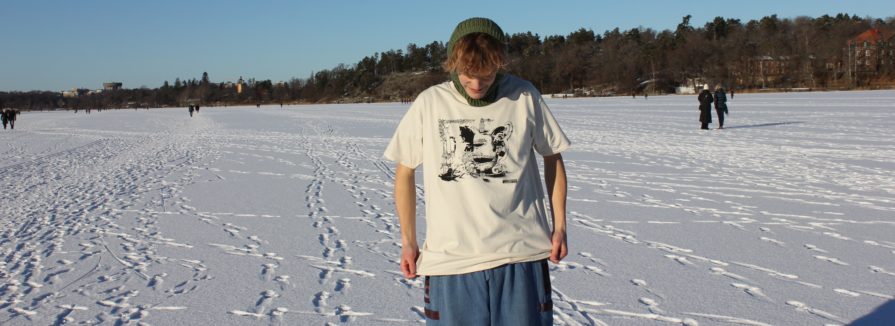

Vessel print
2022-11-17 by Ture Goldkuhl
My second screen print, which you can still buy at my big cartel shop
The image is based on several artbreeder images:
this pot,
this thing
which I think looks like a circus tiger & it's keeper, and a last one with two mouths which's url
I'm still searching for.
The print involves three different screens: the main one, a secondary with the tiger and a third with a line of ceramics.

Fresh shirts

There are several variations of the three different screens and colors. (click each image to enlarge)

Pencil drawing
I scanned this drawing and fiddled with the threshold values to get only white and black. Then printed out on transparent film and exposed my screen to the design.
Amelie in the black colored shirt
Sketch

Drawing of the ceramics
Me in the natural colored shirt
The dagger is also in the design